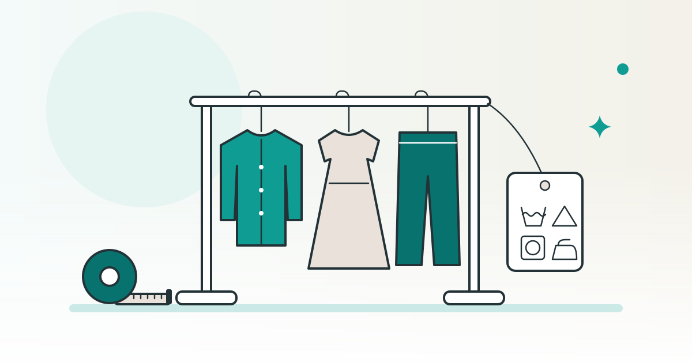

SHOPKIT コラム
服のネットショップを始めるには品質表示・原産国・サイズの伝え方

レディース・メンズ・ルームウェアなど、大人の服をネットショップで売りたい方に向けた記事です。誰に何を売るかを決めたあと、服ならではの表示の決まり（品質表示・原産国）、サイズの伝え方、輸入するときの関税の調べ方を、公的資料に沿って順に整理します。
この記事は、完成品のネットショップを販売している SHOPKIT が書いています。
アパレルのネットショップを開業する前に、着る人・価格帯・季節を決める
同じ「服」のお店でも、誰がどんな場面で着るかによって、そろえる商品も説明の言葉も変わります。最初に、着る人の年代や体型、通勤・休日・家の中といった着る場面を、短い言葉で書き出してみましょう。
この記事は、新品の服を仕入れて売る場合を扱います。売る前に決めておきたいことを、次の表にまとめました。
| 決めること | 考える材料 | あとで困りやすい点 |
|---|---|---|
| 着る人と場面 | 年代・体型・通勤や部屋着などの場面 | 対象が広すぎると、写真や説明の言葉が定まらない |
| 価格帯 | 仕入れ値に加えて、送料・決済の手数料・輸入にかかる費用 | 商品代だけで決めると、届くまでの費用を見落とす |
| 季節の入れ替え | 着てほしい時期から逆に数えた、発注・到着・撮影・掲載の予定 | 到着が遅れると、着る時期と載せる時期がずれる |
| サイズと色の数 | 1つの型ごとのサイズと色の組み合わせ | 組み合わせが多いほど、測る数と在庫の管理が増える |
価格帯は、原価・送料・手数料をそろえてから考えると整理しやすくなります。決め方は別の記事で詳しく扱っています。
関連：ネットショップの価格の決め方｜原価・送料・手数料と税込の表示
人が着る服に付ける品質表示：組成・洗濯の表示・表示した者
服の多くは、家庭用品品質表示法という法律の対象です。ふだん使う家庭用品について、事業者が表示する内容と表示の仕方を決めた法律です。対象は施行令などで決めた品目だけで、品目の一覧は消費者庁の家庭用品品質表示法のページから確かめられます。
消費者庁の繊維製品一覧表では、セーター・シャツ・ズボン・ブラウス・スカート・上衣（ジャケットなど）・寝衣（パジャマなど）は、下の表の3項目を表示する品目です。靴下や手袋のように、表示事項に洗濯などの取扱いが入っていない品目もあります。
| 表示すること | 中身 |
|---|---|
| 繊維の組成 | 使っている全ての繊維の名前と、その割合（%）。繊維の名前は、決められた用語を使う |
| 洗濯などの取扱い | 洗濯・漂白・乾燥・アイロン・クリーニングを表す5種類の基本の記号と、それに付け足す記号で示す |
| 表示した者 | 表示した者の氏名か名称と、住所か電話番号 |
品目ごとに定義があり、条件が付いているものもあります。たとえばシャツの案内では、Tシャツを含めるのは、繊維が2種類以上のものか、なせん加工（生地に柄をプリントして染める加工）をしたものに限るとしています。扱う服がどの品目に当たるかは、一覧と品目ごとの案内で確かめ、迷うときは消費者庁に問い合わせましょう。
子ども服には、大人の服とは別に確かめることもあります。この記事は大人の服に絞り、子ども服は別の記事で扱っています。
関連：韓国子供服のネットショップを始めるには｜仕入れ・価格帯・サイズ表記
品質表示は、縫い付けのラベルや下げ札・貼り札など、商品の側に付けて示します。洗濯の記号は、日本産業規格（JIS L0001）の記号を使います。記号を載せたラベルは、見やすい場所に、縫い目に隠れないようにして、取れにくい方法で付けることとされています（繊維製品の表示について）。消費者庁の洗濯表示の案内は、表示した時期でページが分かれていて、2024年8月20日以降の表示用の案内があります。
表示する者について、繊維製品品質表示規程は、製造業者・販売業者・表示業者を挙げています。海外から仕入れる服なら、届く服にどんな表示が付いているか、その中身が日本の決まりに沿っているか、表示した者として誰の名前と連絡先が載るのかを、仕入れの前に確かめておきましょう。
商品ページの書き方も、表示の中身とそろえます。消費者庁の表示規制の概要は、景品表示法で禁じる「優良誤認表示」の例として、カシミヤが80%ほどのセーターを「カシミヤ100%」と表示する場合を挙げています。ネットショップのお客様は、届くまでタグを見られません。素材の説明は、品質表示と食い違わない言葉で書きましょう。
海外で縫製された服は、原産国を取り違えない書き方にする
原産国とは、その商品がどこの国で作られたかのことです。景品表示法にもとづく告示「商品の原産国に関する不当な表示」は、原産国を一般の消費者が見分けにくい表示を、不当な表示としています。
外国で作られた商品について、告示が挙げている表示は次のとおりです。どれも、その商品が原産国で作られたと見分けにくい場合が対象です。
- 原産国とは別の国の国名・地名・国旗などの表示
- 原産国とは別の国の会社やデザイナーの名前・商標の表示
- 文字の全部か主な部分が日本語の表示
では、服の原産国はどこで決まるのでしょうか。告示は原産国を、商品の中身に実質的な変更を加える行為が行われた国としています。消費者庁の原産国の定義に関する運用細則は、洋服・婦人子供服・下着・寝着などの衣料品では、その行為を縫製としています。つまり、これらの服では、生地の国やデザインの国ではなく、縫製をした国が原産国になります。
同じ告示の運用基準には、生地やデザインの国と縫製した国が違うとき、その関係を日本語で書き分ける例も載っています（国内で縫製した商品の例です）。商品ページでも、「韓国風」「北欧風」のようなデザインの説明と、縫製した国を別の欄に分けて書くと、お客様が取り違えにくくなります。
仕入れの段階で、縫製した国を仕入れ先に聞き、届いた現物の表示と照らしておきましょう。個々の表示が告示に当たるかどうかは、この記事では判断しません。迷うときは、消費者庁の景品表示法の相談窓口に確かめてください。
サイズは、測った位置と着た人の身長を添えて伝える
ネットショップでは、お客様は服を試着できません。S・M・L などのサイズの名前だけでなく、届いた現物を測った寸法を載せましょう。仕入れ先の付けたサイズの名前が、お客様の思う大きさと合うとは限らないので、名前より測った寸法を基準にすると説明がぶれにくくなります。
測る位置は、服の形ごとに決めて、全ての商品でそろえます。トップスなら身幅・着丈・肩幅・袖丈、ボトムスならウエスト・股下・総丈のように項目を決め、どこからどこまで測ったかを一言添えます。伸びる生地は、伸ばさずに平らに置いて測った値かどうかも書いておきます。
着丈の数字だけでは、着たときに丈がどこまで来るかを想像しにくいものです。着用写真には、写っている人の身長と着たサイズを添えましょう。「腰が隠れる」「ひざが隠れる」のように、丈の位置を言葉でも示すと、お客様は自分の身長との差で考えやすくなります。
- 測った寸法：項目ごとの値と、どこからどこまで測ったか
- 着た人の目安：写真の人の身長と、着たサイズ
- 丈の位置：腰・ひざなど、着たときに裾が来る位置
- 生地の伸び：伸びる生地かどうかと、測ったときの置き方
ルームウェアのように、ゆったり着ることを想定した服は、その旨も書き添えておくと選ぶ手がかりになります。サイズが合わなかったときの交換や返品の決まりも、販売を始める前に決めて、お店のページに書いておきましょう。
海外から仕入れる服の関税は、税関の目安と事前教示で確かめる
海外から服を仕入れるときは、商品代のほかに、輸入にかかる税（関税・消費税など）も見込んでおく必要があります。計算の仕方は、税関の税額計算方法の案内にまとめられています。
税関の主な商品の関税率の目安（2026年4月1日現在）では、繊維製のコート・ジャケット・ズボン・スカートが8.4〜12.8％、シャツ・肌着が7.4〜10.9％となっています。ただし、この表は個人輸入で関心の高い品目を選んだ目安です。率は原産国・素材・加工・用途によって変わることがあり、表の率がそのまま当てはまるとは限らないと書かれています。
輸入する物の税率を知るには、まず関税率表のどこに分類されるかを確かめます。この当てはめを品目分類といい、関税率表は国際的な分類の決まり（HS 条約）にもとづいて作られています（品目分類の概要）。
仕入れる服が決まったら、品目分類の事前教示制度も使えます。輸入する前に、その物の分類と関税率を税関に問い合わせて、回答を受けられる仕組みです。原則は文書で問い合わせて文書で回答を受け、回答書の有効期間は3年間とされています。原産地について前もって問い合わせる原産地の事前教示もあります。
なお、税関には、関税の率を当てはめるために原産地を決める原産地規則もあります。経済連携協定などの特恵税率を使うときは、原則として原産品であることを証明する書類を出す手続きが要ります。前の節で見た原産国の表示の告示とは、別の決まりです。
仕入れ先から見積もりを取るときは、商品代・国際送料・関税と消費税・手配を頼む場合の手数料を、分けて書いてもらいましょう。仕入れ先の探し方と確かめることは、別の記事で整理しています。
関連：ネットショップの仕入れ先はどう探す？個人が使える仕入れ先と確かめること
SHOPKIT に掲載している大人の服のお店（2026年10月15日時点）
2026年10月15日時点の SHOPKIT のサービスページでは、大人の服のジャンルのお店は、レディースファッションが12店、メンズファッションが9店、ルームウェアが8店です。各店の内容はお店の一覧で確かめられます。
同じ時点のサービスページで、販売価格と商品原価を載せている大人の服のお店は、ルームウェアの1店だけです。レディースファッションとメンズファッションのお店は、原価を載せていません。下の値は自社のサービスページの掲載例で、服のネットショップ全体の相場としては使えません。
この記事は、完成品のネットショップを販売している SHOPKIT が書いています。
| 掲載しているお店 | 販売価格 | 商品原価（中央値） |
|---|---|---|
| 原価を載せているルームウェアの1店 | ¥4,300〜6,800 | ¥533 |
※ 2026年10月15日時点のサービスページの販売価格と原価の掲載欄の値です。このお店の欄には、値を出した商品の数と、換算の条件や含まない費用の注記が載っていません（原価を載せているほかのお店のうち4店の欄には「1元22円で換算」「国際送料・関税・梱包・代行手数料は含まない」と注記があります）。届くまでにかかる費用は、原価とは別に確かめてください。
同じ時点のサービスページでは、商品は韓国・中国など海外のメーカーから直接仕入れる形を案内しています。仕入れ方法の詳しい説明は、オンライン相談で行うとしています。料金は、サービスページの料金の欄で確かめてください。
お店を見るときは、品ぞろえの写真だけでなく、品質表示・原産国・サイズの情報を自分で確かめて書けるかどうかも、あわせて考えてみてください。
よくある質問
服のネットショップでは、商品ページにも素材や洗い方を書いたほうがよいですか？
品質表示は、ラベルや下げ札など、商品の側に付けて示す表示です。ネットショップのお客様は届くまでタグを見られないので、品質表示と食い違わない言葉で、商品ページにも素材や洗い方を書いておくと選ぶときの手がかりになります。
服の原産国は、デザインした国と縫製した国のどちらになりますか？
景品表示法の原産国の告示の運用細則では、洋服などの衣料品について、縫製を、原産国を決める実質的な変更の行為としています。デザインの国と縫製の国が違う服は、商品ページでも分けて書きましょう。個々の表示の判断は、消費者庁の窓口で確かめてください。
服を輸入するときの関税率は、どこで調べられますか？
税関の「主な商品の関税率の目安」で、大まかな率を見られます。目安の表なので、仕入れる服が決まったら、税関の事前教示制度で分類と税率を前もって問い合わせる方法があります。
※ この記事の SHOPKIT の掲載店数・価格・原価・仕入れの案内は、2026年10月15日時点のサービスページの記載です。公的資料は2026年10月19日と20日に確認した時点の内容です。表示の決まりや税率の、個々の商品への当てはめは、消費者庁・税関の窓口で確かめてください。